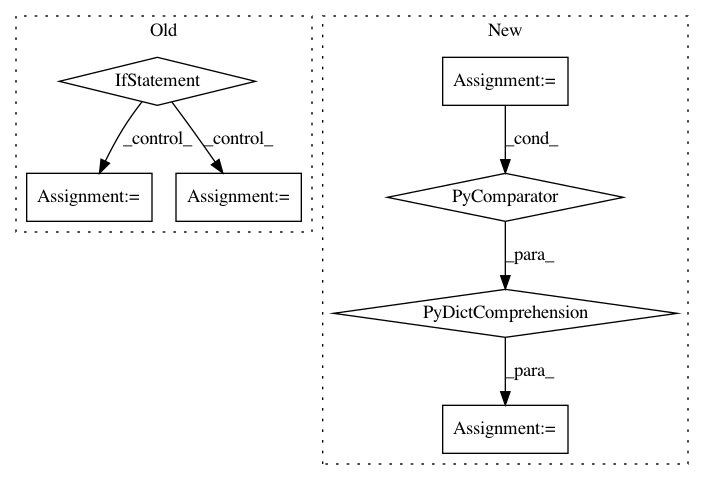

f33e7b5201494eb52360efc14dbfc7e6eeb02096,examples/mujoco_all_sac_real_nvp_hierarchy.py,,run_experiment,#Any#,191
Before Change
low_level_policy = load_low_level_policy(policy_path=low_level_policy_path)
if variant["env_name"] == "ant":
ant_env = normalize(AntEnv())
env = HierarchyProxyEnv(wrapped_env=ant_env,
low_level_policy=low_level_policy)
elif variant["env_name"] == "random-goal-swimmer":
random_goal_swimmer_env = normalize(RandomGoalSwimmerEnv(
reward_type=variant["env_reward_type"],
goal_reward_weight=variant["env_goal_reward_weight"],
goal_radius=variant["env_goal_radius"],
terminate_at_goal=variant["env_terminate_at_goal"],
))
env = HierarchyProxyEnv(wrapped_env=random_goal_swimmer_env,
low_level_policy=low_level_policy)
elif variant["env_name"] == "random-goal-ant":
random_goal_ant_env = normalize(RandomGoalAntEnv(
reward_type=variant["env_reward_type"],
goal_reward_weight=variant["env_goal_reward_weight"],
goal_radius=variant["env_goal_radius"],
terminate_at_goal=variant["env_terminate_at_goal"],
))
env = HierarchyProxyEnv(wrapped_env=random_goal_ant_env,
low_level_policy=low_level_policy)
elif variant["env_name"] == "humanoid-rllab":
humanoid_env = normalize(HumanoidEnv())
env = HierarchyProxyEnv(wrapped_env=humanoid_env,
low_level_policy=low_level_policy)
pool = SimpleReplayBuffer(
env_spec=env.spec,
max_replay_buffer_size=variant["max_pool_size"],
)
After Change
if "random-goal" in env_name:
EnvClass = RANDOM_GOAL_ENVS[env_type]
env_args = {
name.replace("env_", "", 1): value
for name, value in variant.items()
if name.startswith("env_") and name != "env_name"
}
env = normalize(EnvClass(**env_args))
elif "rllab" in variant["env_name"]:
EnvClass = RLLAB_ENVS[variant["env_name"]]
base_env = normalize(EnvClass())
env = HierarchyProxyEnv(wrapped_env=base_env,
In pattern: SUPERPATTERN
Frequency: 3
Non-data size: 7
Instances
Project Name: rail-berkeley/softlearning
Commit Name: f33e7b5201494eb52360efc14dbfc7e6eeb02096
Time: 2018-05-22
Author: kristian.hartikainen@gmail.com
File Name: examples/mujoco_all_sac_real_nvp_hierarchy.py
Class Name:
Method Name: run_experiment
Project Name: rail-berkeley/softlearning
Commit Name: a55f9be217b2320cec7c7dc44a8245496f851af5
Time: 2019-06-01
Author: hartikainen@berkeley.edu
File Name: softlearning/algorithms/sac.py
Class Name: SAC
Method Name: _get_feed_dict
Project Name: rail-berkeley/softlearning
Commit Name: 0e1f9982cbf60d509e87e324c7076f7b44aeea1d
Time: 2018-05-22
Author: kristian.hartikainen@gmail.com
File Name: examples/mujoco_all_sac_real_nvp.py
Class Name:
Method Name: run_experiment